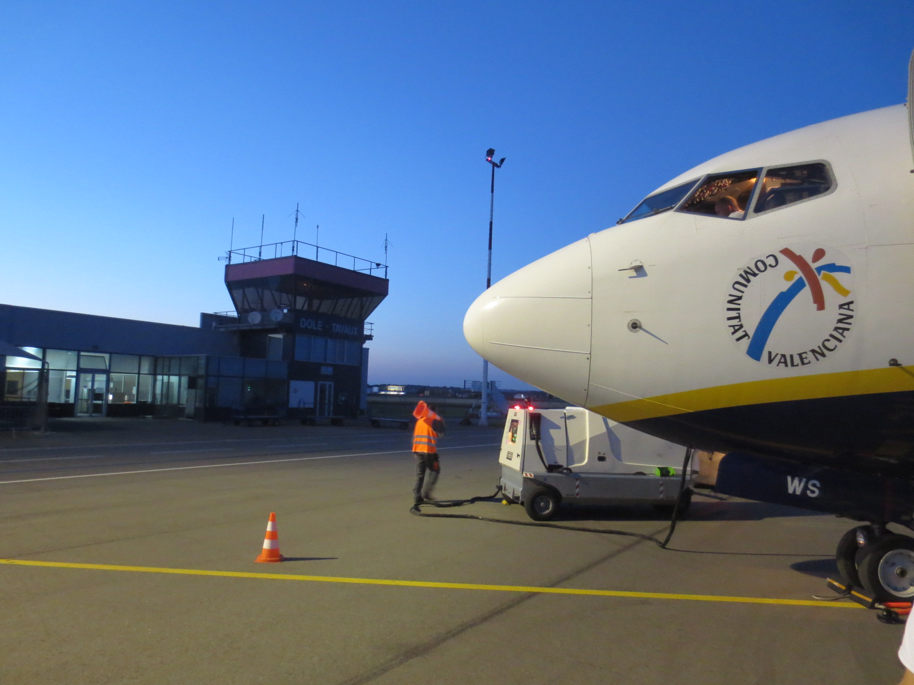
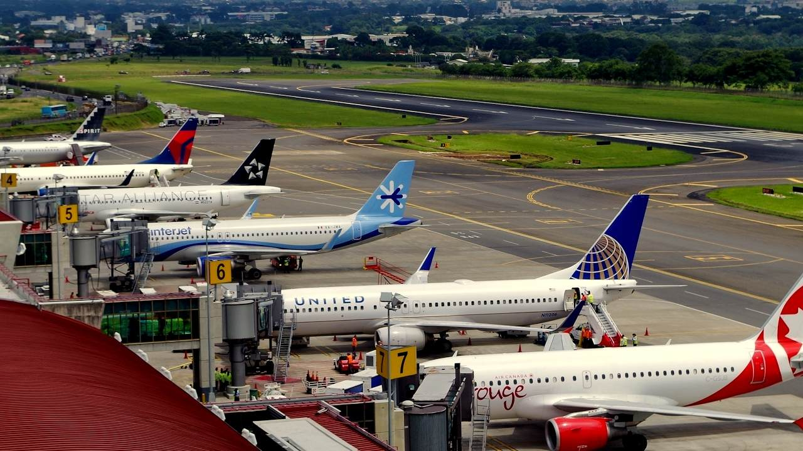

Aeropuerto Internacional Goloson
El Aeropuerto Internacional Golosón es un aeropuerto civil y militar hondureño ubicado en el litoral atlántico en la ciudad de La Ceiba. Es uno de los cinco aeropuertos internacionales con los que cuenta Honduras. Posee unas instalaciones que fueron remodeladas y finalizadas en 2004.
Aeropuerto Juan Manuel Gálvez

El Aeropuerto Internacional Juan Manuel Gálvez, es un aeropuerto internacional ubicado en la isla de Roatán, en el mar Caribe a 50 km de la costa norte de Honduras. Roatán está en el Departamento de Islas de la Bahía de Honduras.
Aeropuerto DOLE
El aeropuerto está a 197 metros por encima de nivel de mar. Tiene una pista de asfalto con dirección 05/23, la cuál mide 2.230 por 45 metros. También tiene una pista paralela con una superficie de hierba que mide 800 por 50 metros. La pequeña terminal cuenta con una cafetería.
Aeropuerto Utila
El Aeropuerto de Utila es un aeropuerto que sirve a Utila, en las Islas de la Bahía, Honduras. El Aeropuerto de Utila controla el tráfico aéreo regional e internacional para la ciudad de Utila.
El Arrayán Airport
El Aeropuerto de Olanchito, también conocido como el Aeropuerto de El Arrayán, es un aeródromo que sirve a la ciudad de Olanchito en el Departamento de Yoro en Honduras.La pista de aterrizaje está ubicada justo al norte de la ciudad, y tiene doble uso como una calle local.